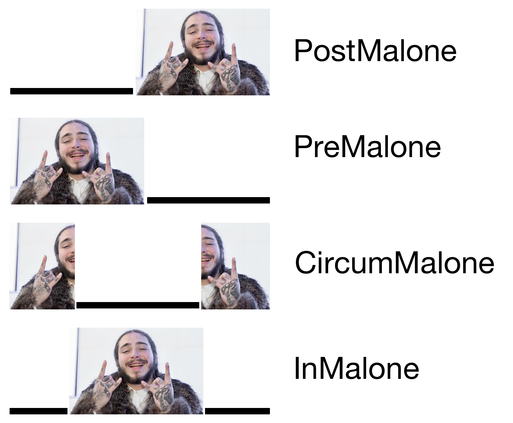

<img class="tall" src="ling_memes/juice.jpg"> --- # Common Morphological Patterns ### Dr. Will Styler - LIGN 120 --- ### Today's Plan - How do we gloss sentences? - How do languages vary in how they use morphology? - What kinds of morphological machinery are common around the world? --- # Glossing Conventions --- ### Translations often don't give us enough detail --- ### Soy de Denver (Spanish) - 'I'm from Denver' --- ### Ngelay chadi (Mapuche) - 'There is no salt' - <small>Baker, M. (2002). On category asymmetries in derivational morphology. In Morphology 2000. John Benjamins Publishing.</small> --- ### Ka:haÃÅskiyakiÃÅre:reÃÅ îeriwa:ha. (Wichita) - ‚ÄòOnce upon a time they say there was a big village.‚Äô - üòÆ - <small>Rood, D. S. (2002). Polysynthetic word formation. In Morphology 2000. John Benjamins Publishing.</small> --- ### We can do better! - We can provide detailed glosses which relate the language forms to the translated meaning - These are called **interlinear glosses**, and (often) follow the Leipzig Glossing Conventions - [The rules are defined here](https://www.eva.mpg.de/lingua/resources/glossing-rules.php) --- ### Rough outline of the Leipzig Conventions - 1) Word-to-word correspondence - Textual alignment from line to line - 2) Set grammatical value abbreviations - Your book has a great list of them at the beginning - 3) Separate morphemes within words using hyphens where possible - 4) Use periods to mark non-separable morphological constituents within a word (when not segmentable) --- ### Soy de Denver (Spanish) - be.1SG.PRES from Denver - 'I'm from Denver' --- ### Ngelay chadi (Mapuche) --- ### Ka:haÃÅskiyakiÃÅre:reÃÅ îeriwa:ha. (Wichita) <img class="wide" src="morphology/wichita_gloss.jpg"> --- ### Interlinear Glossing makes things *much* easier for linguists - It allows quicker understanding of the components and elements of the sentence - With just translations, understanding requires analysis - We see the morphology front-and-center - This is a bit tricky in typesetting, but it works! - *Interlinear glossing is a great tool to use in describing data and words!* --- ### One specific element we *need* to see for LIGN 120 - Separate morphemes using '-' - Separate within-morpheme meanings using '.' - This is subtle, but *crucial* - <img class="wide" src="morphology/wichita_gloss.jpg"> --- ### Mind you, some languages do more within-word morphology than others... - Wait, hold on, that feels like a segue! --- <img class="wide" src="humorimg/segway.jpg"> --- # Do languages differ in how they use morphology? --- (Yes.) --- ## Morphological Type A means of categorizing how languages put words together - This is useful for comparing word-building strategies *across languages* * ***Do words have lots of morphemes or few?*** --- ### Do words have lots of morphemes or few? * If words have few morphemes (like English or Chinese), they're "isolating" or "analytic" * If they have many (like Spanish or German), they're "synthetic" * Languages where whole sentences are single words are sometimes called "polysynthetic" --- <lang>English</lang><br><ldata>IE:Germanic - All over</ldata> I did see the cat on the street, he's cute. I did see DEF cat on DEF street he-be.3sg cute. * Only one morpheme in most words! ***This is Isolating!*** --- <lang>Spanish</lang><br><ldata>IE:Italic - All over</ldata> *Esta escribi√©ndomelo* be.3sg write-GER-1sg.DAT-3sg.MASC 'He/she is writing it to me.' * Lots of morphemes per word! ***This is Synthetic!*** --- <lang>Wichita</lang><br><ldata>Caddoan - Oklahoma</ldata> Kiyakiic√≠wa:c√©:hir îas îirhawi ‚ÄòThere was the big buffalo lying there.‚Äô * Uh... yeah. ***This is polysynthetic!*** --- ## We also care about how easy the morphemes are to pick apart --- ### In a synthetic language, do the morphemes blend together, or are they easy to pick apart? * If the meanings have individual, easily separable forms, it's "agglutinating" * If the meanings merge inseparably into opaque forms, it's "fusional". --- <lang>Turkish</lang><br><ldata>Turkic - Turkey</ldata> <img src="lotwimg/agglutinatingturkish.png"> * Those add together cleanly, and pick back apart. We're ***agglutinating***! --- <lang>German</lang><br><ldata>IE:Germanic - Germany</ldata> *Donaudampfschifffahrtselektrizit√§tenhauptbetriebswerkbauunterbeamtengesellschaft* Donau-dampf-schiff-fahrts-elektrizit√§ten-haupt-betriebs-werk-bau-unter-beamten-gesellschaft Danube-steam-ship-transport's-electricities-head-operation's-work-building-under-officials-association * Look at those clean lines! ***Agglutinative!*** --- <lang>Russian</lang><br><ldata>IE:Slavic - Russian</ldata> Ti uhodila so mnoi Ti u-hodi-la so mnoi 2sg.NOM away-go.IMPERF-past.FEM with 1sg.INST "You left with me" * Uh-oh! Those morphemes mean lots of things! This is ***Fusional!*** --- <lang>Spanish</lang><br><ldata>IE:Italic - All over</ldata> Durmi√©ramos Durmi√©ramos Sleep.2pl.SUBJ.PAST.IMPERFECT * Whoa. All that is one morpheme? No easy lines? ***Fusion*** drives engaged! --- ### It's always a continuum * English is isolating, but Mandarin is *more* isolating * Same with Synthetic: Nobody's besting Wichita, but we don't hold it against them. * Most languages do *some* fusion and *some* agglutination * We call a language fusional or agglutinating when it becomes a habit --- ### Morphological Type - Review! * If a language has few morphemes per word, it's *isolating* * If the language has multiple morphemes per word, it's *synthetic* * If a synthetic language generally has easy-to-pick-apart morphemes, it's *agglutinating* * If a synthetic language generally has blended or combined morphemes, it's *fusional* --- ... Which gets us into our next question --- # How are languages marking meaning, anyways? --- ### Two main methods of doing meaning - Concatenation - Non-Concatentative Processes --- ## Concatenative Morphology --- ## Concatenation Combining elements in a strictly linear order, end-to-end - So, *concatenative morphology* adds morpemes one-after-the-other - fish-ing - in-conceiv-able --- ### Common Methods of Concatentative Morphology - Prefixes - Suffixes - Circumfixes - Infixes --- ### Prefixes - Precedes the base - in-conceivable - u-hodi-t (away-go.IMPERF-INF) 'To go Away' (Russian) --- ### Suffixes - Follows the base - cat-s - u-hodi-la (away-go.IMPERF-PAST.FEM) 'She went away' (Russian) --- ### Infixes - Placed inside the base - abso-f\*\*\*ing-lutely - Alabama Passive infix -l- - <img class="wide" src="morphology/alabama_infix.jpg"> --- ### Circumfixes - Occur on both sides of the base, but not independently - For an affix to be a circumfix, *both sides must be obligatory!* - German ge-X-t past participle (ge-spiel-t, from spielen) - This Papuan Malay circumix ke-X-ang which nominalizes verbs - ---  --- <section data-background-color=#708cef></section> ### In the Chukchi example below, Comitative forms are marked with a ... <img class="wide" src="morphology/chukchi_circumfix.jpg"> A) Prefix B) Suffix C) Infix D) Circumfix --- ### Remember, it's not always so easy to pull things apart! --- ### Phonology makes things less clear, sometimes! - This Begak (Austronesian, Malaysia) infix -i- marking completive aspect - <img class="wide" src="morphology/begak_infix.jpg"> - The infix is added, then the stem vowel is removed - Can also neutralize contrasts --- ### Sequences of affixes can make some of them feel infixy - Un-thought-ful-ness - How do we know '-ful' isn't an infix? --- ## Aside: Ordering of affixation --- ### Recovering ordering of operation (and thus, meaning) is always tricky! - Incorrect understanding of the ordering can lead to *morphological ambiguity* - This appears well handled by hierarchy - This is why some people create morphological trees, showing the components being modified --- --- --- <img class="wide" src="diagrams/mtree_unlockable.jpg"> --- <img class="wide" src="diagrams/mtree_unlockable_v2.jpg"> --- <img class="wide" src="diagrams/mtree_unlockability.jpg"> --- ... but are we always adding something on? --- ## Non-Concatenative Morphology --- ### Sometimes, morphological operations *change* words without adding new chunks - You can't readily disassemble the pieces - The meaning change is carried by modifications to the other morphemes - ... or nothing appears to change at all! --- ### Common non-concatenative ways of adding chunks of meaning to words - Conversion - Stem Modification - Reduplication --- ### Conversion - 'Just change the usage to change the type' - Sometimes, there are changes with stress shift - re'peat (V) -> 'repeat (N) - con'vict (V) -> 'convict (N) - Sometimes, there are no changes - ticket (N, V) - drink (N, V) - I computered all day yesterday. --- ### Stem Modification - *Modify* the stem to indicate a shift in morphological category or meaning - This can take many forms --- ### Stem Modification - Tone <img class="wide" src="morphology/dinka_tonepassive.jpg"> - What's the passive morpheme in Dinka? --- ### Stem Modification - Vowel Modification ('Ablaut') <img class="wide" src="morphology/zway_ablaut.jpg"> - What's the 2SGF morpheme in Zway? - Also, sing/sang --- ### Stem Modification - Consonant Changes <img class="wide" src="morphology/chaha_palatalization.jpg"> - What's the 2SGF morpheme in Zway? --- ### Stem Modification - Other Processes - Labialization - Vowel Fronting/Backing/Rounding/ATR Changes - Voicing Changes - Lenition or Fortition - Gemination or Lengthening - Shortening - Segment deletion - Metathesis (swapping segments around) --- ### Reduplication - Copying all or part of the base - <img src="morphology/warlpiri_redup.jpg"> - A big, BIG problem if you're expecting different segments --- ### ... but in all of these cases, nothing's added, just changed! --- ### Wrapping Up - Using reasonable glossing conventions makes life easier for everybody - Languages have more or fewer morphemes per word, and meanings separate more or less cleanly - Meaning can be expressed by concatening chunks of form in various ways - ... or by modifying the base in predictable and detectable ways - Be prepared for all kinds of craziness when dealing with actual language data! --- ## For Next Time - We'll have more data to work with! --- <huge>Thank you!</huge>